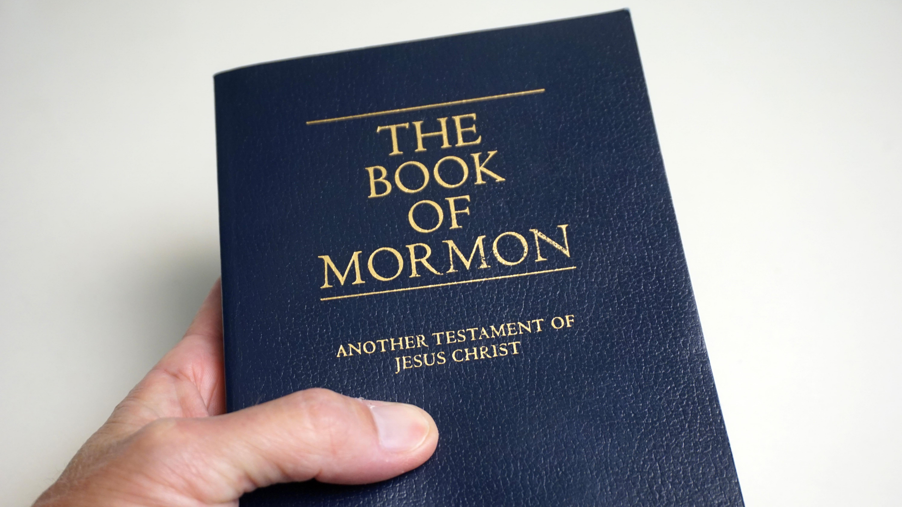

This is my Testimony
The Book of Mormon has changed my life. When I first joined the church of Jesus Christ, I was just a young man and didn’t understand who Jesus Christ was, even though I have been through my whole life by then. The only thing I knew was that He had done a sacrifice for us and that He was our brother in a certain way, so, I knew He existed, I knew the Book of Mormon was true but I knew it just because I felt like home when I used to go to church or read it for a couple of minutes. The day came when I needed to go to serve a mission, I was about to testify about Jesus Christ and his Gospel and the only evidence I had that it was restored was the Book of Mormon, so I started reading it as any other book I had at home but I realized it was not the same, it wasn’t something I could memorize, like a history book, or something I could analyze, like a chemistry book, I realized the way to read it was through the Holy Ghost and when I came to understand this, everything changed.

Suddenly, the book had life itself, it was teaching me things about myself, my past, present, and future life, but most importantly, it thought me about Jesus Christ, the one that made all these things possible, I came to know Him the way He is, as a friend, a brother, and a Father, I came to know him, I knew that He lives and that He’s always there to help us, The Book of Mormon showed me how to reach out to Him so that He could respond, it thought me to hear Jesus Christ’s voice and recognize the promptings of the Spirit, it helped me not just to change my actions but my whole self, I was born again as a new creature and I testify of that in the name of Jesus Christ.